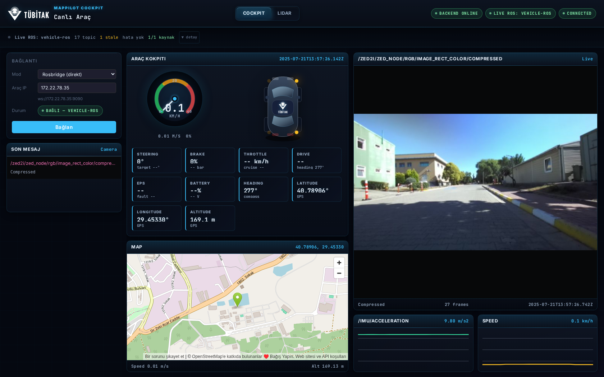
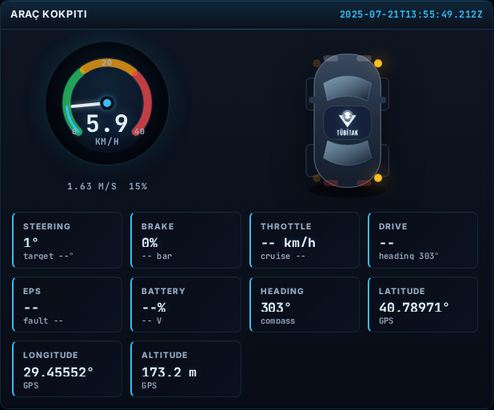
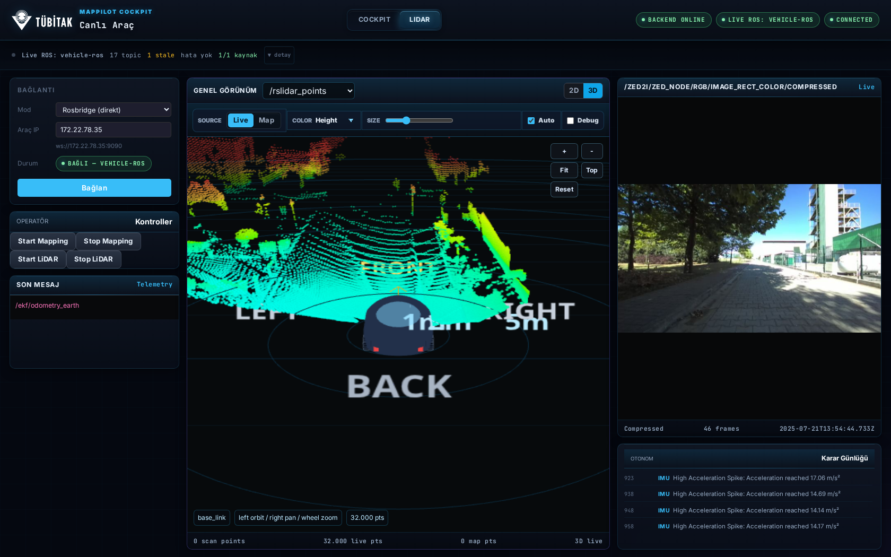
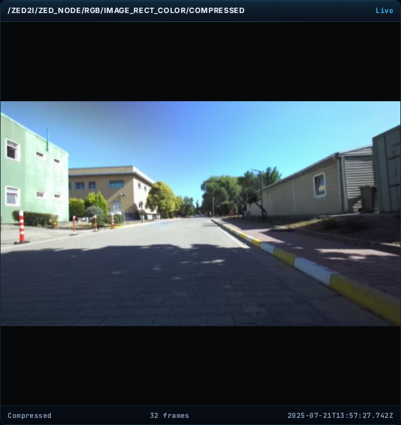

Otonom aracın tüm sensör ve durum verisini, tek bir gerçek zamanlı operatör ekranında birleştiren web tabanlı izleme arayüzü.
Otonom bir araç onlarca sensör topic'i yayınlar — ama operatörün elinde durumu anlık görebileceği bütünleşik bir ekran yoktur.
Hız, LiDAR, kamera, GPS ayrı araçlarda (rviz, terminal, ayrı pencereler). Operatör bütünü tek bakışta göremez.
Klasik ROS araçları her bilgisayara kurulum ister; sahada/jüri önünde hızlı bağlanmak zordur.
Araçta dönüş sinyali / hız gibi CAN verisi her zaman yayınlanmaz — gösterge boş kalır.
Bir topic susarsa veya bağlantı koparsa operatör bunu fark etmeden eski veriye güvenir.
MapPilot Cockpit aracın ham sensör verisini alır, eksik telemetriyi hesaplar ve operatöre tek bir tarayıcı ekranında sunar.
Kokpit, 3B LiDAR, kamera ve harita aynı ekranda — bağlamı kaybetmeden.
Bir URL aç, bağlan. İstemci tarafında ROS kurulumu yok.
Hız, dönüş, sinyal hareket sensörlerinden hesaplanır — CAN beklemeden.
Her topic'in tazeliği ve bağlantı durumu canlı izlenir, arıza görünür.
Tek kod tabanı, birden çok mod: vehicle-ros (canlı) · mqtt (köprü) · bag (kayıt oynatma) · synthetic (test). Kaynak değişse de arayüz aynı kalır.

Aracın anlık durumu — hız, yönelim, konum — tek panelde, sürekli güncel.
"Eksik telemetri" probleminin somut çözümü: sinyal CAN'dan gelmese bile sistem dönüşü kendisi algılar.


ZED2i kameradan canlı görüntü ve GPS izli OpenStreetMap konumu yan yana — operatör çevreyi hem görür hem konumlar.

rosbridge koparsa istemci kendiliğinden tekrar bağlanır; demo ortasında çökme yok.
Hangi topic taze / eski, bağlantı durumu canlı görünür — sessiz arıza kalmaz.
Adaptif çözünürlük, on-demand render ve backpressure ile ağır nokta bulutlarında kararlı.
MQTT köprüsünde garantili teslim ve hız sınırı ile veri tutarlılığı.
PointCloud2, Image, IMU, NavSatFix — yaygın sensör formatlarıyla uyumlu.
323 otomatik test ile doğrulanmış kararlı sistem.
Sistemi gerçek araç verisiyle canlı görelim.
B planı: bağlantı sorunu olursa kayıtlı bag oynatma hazır.
Sorular?